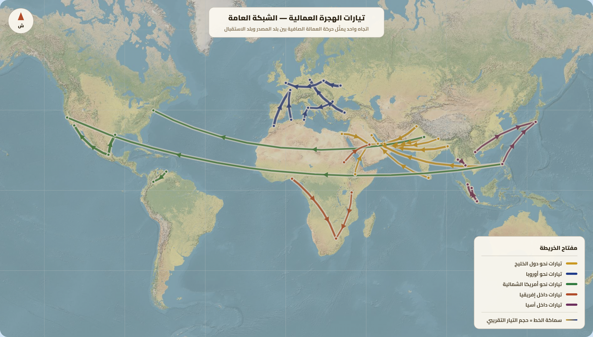
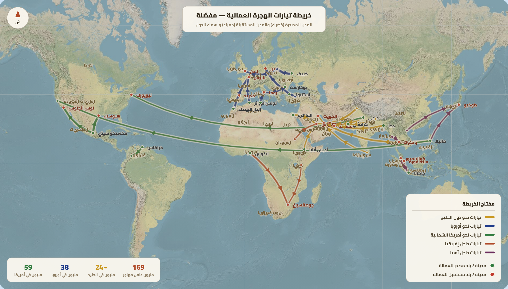

تمارين – الحركية المجالية للسكان: هجرة العمل الدولية
- هجرة الأدمغة:
- هجرة أصحاب الاختصاص في مجالات علمية ومهنية عالية (أطباء، مهندسون، باحثون، أساتذة جامعيون) من بلدانهم الأصلية نحو البلدان المتقدمة، ويمكن أن تكون هذه الهجرة وقتية أو نهائية، قانونية أو غير قانونية. وتنطلق أساساً من أقطار آسيا الجنوبية والشرقية وبعض أقطار إفريقيا وأوروبا الشرقية وروسيا نحو أمريكا الشمالية وأوروبا الغربية.
- تحويلات المهاجرين:
- الأموال التي يحولها المهاجرون إلى بلدانهم الأصلية، وقد بلغت سنة 2021 حوالي 773 مليار دولار على المستوى العالمي. وتحتل الهند المرتبة الأولى (89 مليار دولار) تليها المكسيك ثم الصين. وتُعدّ من أهم الإيجابيات الاقتصادية للهجرة على بلدان الانطلاق.
- المهاجرون الدوليون:
- الأشخاص الذين ينتقلون من بلد إلى آخر للإقامة فيه بشكل دائم أو مؤقت بحثاً عن ظروف عيش أفضل. وبلغ عددهم قرابة 281 مليون سنة 2020 مقابل 84 مليون سنة 1970، أي ما يعادل 3.6% من سكان العالم.
- الميز العنصري:
- التمييز ضد المهاجرين في بلدان الاستقبال بسبب أصولهم العرقية أو الثقافية، وهو من الانعكاسات الاجتماعية السلبية للهجرة على بلدان الاستقبال، إذ يؤدي إلى انتشار المشاكل الاجتماعية وارتفاع معدل البطالة لدى المهاجرين غير القانونيين.
| السنة | عدد العمال المهاجرين (مليون) |
|---|---|
| 1970 | 30 |
| 2019 | 169 |
المصدر: معطيات الدرس حول الحركية المجالية للسكان


تنقسم تيارات الهجرة العمالية الدولية إلى تيارين رئيسيين: تيار هجرة العمال غير المختصين وتيار هجرة الأدمغة. تنطلق هجرة العمال غير المختصين أساساً من البلدان النامية بآسيا الجنوبية (خاصة الهند) وشرق آسيا (خاصة الصين) وجنوب شرقي آسيا وأمريكا اللاتينية (خاصة المكسيك) وإفريقيا، لتتجه نحو البلدان النامية (دول الخليج النفطية وجنوب إفريقيا والكوت دي فوار وغانا والأرجنتين) والبلدان المتقدمة (أمريكا الشمالية خاصة الولايات المتحدة وأوروبا الغربية وأستراليا واليابان). أما هجرة الأدمغة فتنطلق من أقطار آسيا الجنوبية والشرقية (الهند – الصين – كوريا الجنوبية) وبعض أقطار إفريقيا ومنها الدول العربية وأوروبا الشرقية وروسيا، لتتجه نحو البلدان المتقدمة بأمريكا الشمالية خاصة الولايات المتحدة وأوروبا الغربية. وعموماً تستقطب الدول الغنية خاصة بأمريكا الشمالية وأوروبا الغربية ودول الخليج العربي أكثر من 2/3 إجمالي العمال المهاجرين في العالم (67%).
- مقدمة: تقديم الهجرة العمالية الدولية وأهميتها في العالم المعاصر.
- تطوير: أولاً. الانعكاسات على بلدان الانطلاق (ديمغرافياً، اجتماعياً، اقتصادياً)؛ ثانياً. الانعكاسات على بلدان الاستقبال (ديمغرافياً، اجتماعياً، اقتصادياً).
- خاتمة: الحصيلة العامة وضرورة سياسات هجرة عقلانية.
مقدمة
تُعدّ الهجرة العمالية الدولية ظاهرة بنيوية في العالم المعاصر، إذ انتقل عدد العمال المهاجرين من 30 مليون سنة 1970 إلى 169 مليون سنة 2019. وتطرح هذه الظاهرة انعكاسات متعددة على بلدان الانطلاق وبلدان الاستقبال، تتراوح بين الإيجابيات والسلبيات.
تطوير
أولاً. الانعكاسات على بلدان الانطلاق
ديمغرافياً، تساهم الهجرة في تراجع نسبة الفئات الشابة واختلال التركيبة الديمغرافية بسبب خروج الفئات النشيطة في سن العمل إلى الخارج. واجتماعياً، تحدّ الهجرة من البطالة والفقر بين العائلات بفضل تحويلات المهاجرين، لكنها تتسبب في تفكك الروابط الأسرية. واقتصادياً، تمكّن الهجرة من التخفيف من الضغط على سوق الشغل ونقل التكنولوجيا وتدفق العملة الصعبة بفضل التحويلات التي بلغت 773 مليار دولار سنة 2021 (الهند 89 مليار دولار، ثم المكسيك، ثم الصين)، في مقابل خسارة الأدمغة وجزء هام من الناشطين.
ثانياً. الانعكاسات على بلدان الاستقبال
ديمغرافياً، تساهم الهجرة في الرفع من نسبة النمو الطبيعي والحد من التهرم السكاني، خاصة في الدول المتقدمة. واجتماعياً، تنتشر المشاكل الناجمة عن الميز العنصري وارتفاع معدل البطالة لدى المهاجرين غير القانونيين. واقتصادياً، تستفيد بلدان الاستقبال من تدفق يد عاملة بأجور منخفضة ومن هجرة الأدمغة، لكنها تتكبد خسائر مالية بسبب تحويلات المهاجرين، إذ تفقد الولايات المتحدة 75 مليار دولار سنة 2021 والعربية السعودية 41 مليار دولار.
خاتمة
هكذا تتعدد انعكاسات الهجرة العمالية الدولية وتتداخل بين الإيجابي والسلبي على بلدان الانطلاق وبلدان الاستقبال على حد سواء، مما يستوجب وضع سياسات هجرة عقلانية تحقق التوازن بين مصالح جميع الأطراف.
الخط الزمني: 1970: ارتفاع عدد المهاجرين الدوليين إلى 84 مليون ... 2019: ارتفاع عدد العمال المهاجرين إلى 169 مليون ... 2020: ارتفاع عدد المهاجرين الدوليين إلى 281 مليون ... 2021: بلوغ تحويلات المهاجرين 773 مليار دولار.